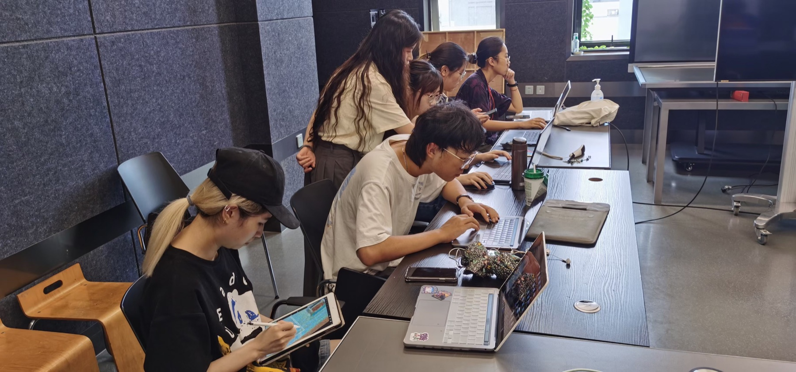
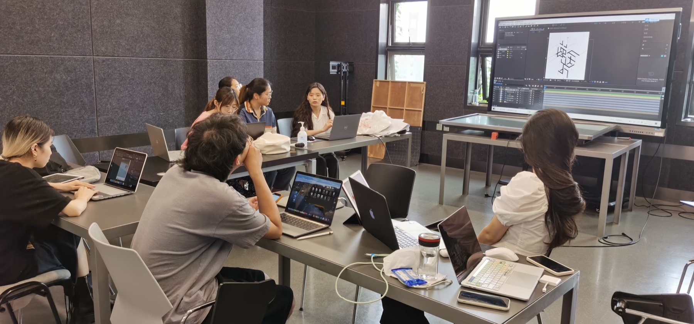
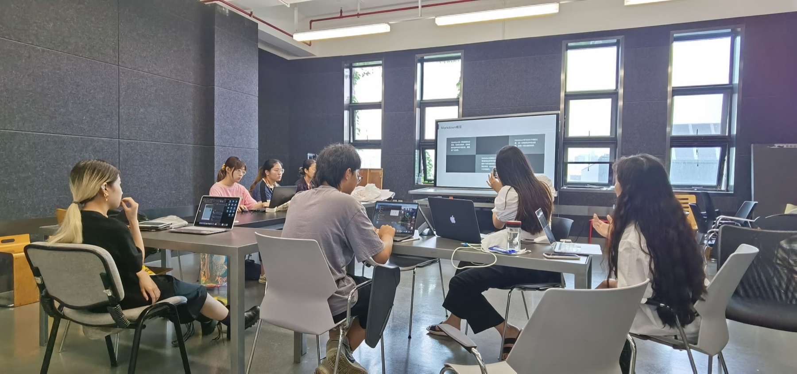
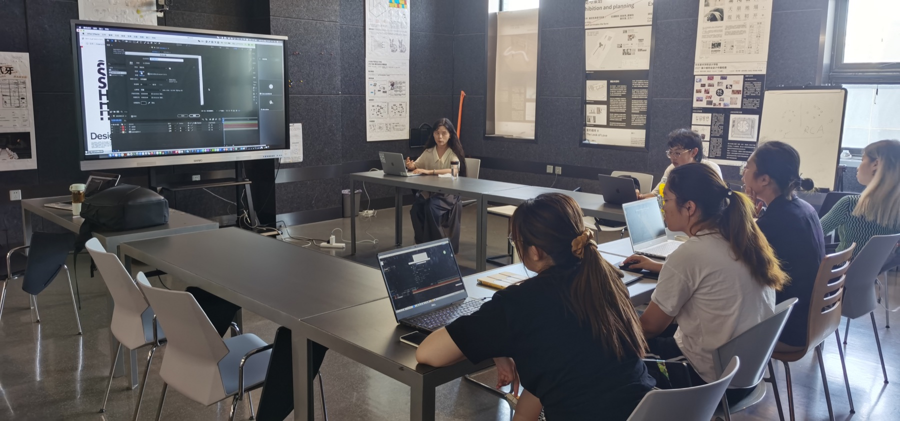

Teaching Assistant助教
Poster Design for Artists为艺术家做海报
Poster design course focused on visual identity, exhibition communication, and artist-facing design.聚焦视觉识别、展览传达与面向艺术家的海报设计课程。




Teaching Assistant助教
Poster design course focused on visual identity, exhibition communication, and artist-facing design.聚焦视觉识别、展览传达与面向艺术家的海报设计课程。



